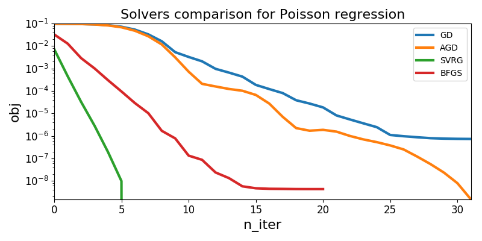

In this example, we explain how to try out different solvers for the Poisson
regression model, using \(\ell_2^2\) penalization, namely ridge (which is
the default value for the penalty parameter in
tick.inference.PoissonRegression).
Note that for this learner, the step of the solver cannot be tuned
automatically. So, the default value might work, or not.
We therefore urge users to try out different values of the step parameter
until getting good concergence properties.
Other penalizations are available in tick.inference.PoissonRegression:
penalty='none'penalty='l1'penalty='elasticnet', where in this case the elastic_net_ratio
parameter should be used as wellpenalty='tv'Remark: we don’t use in this example solver='sgd' (namely vanilla
stochastic gradient descent, see tick.optim.solver.SGD) since it performs
too poorly.
The plot given below compares the distance to the minimum of each solver along iterations, on a logarithmic scale.
Python source code: plot_poisson_regression.py
import numpy as np
import matplotlib.pyplot as plt
from tick.simulation import SimuPoisReg, weights_sparse_gauss
from tick.inference import PoissonRegression
from tick.plot import plot_history
n_samples = 50000
n_features = 100
np.random.seed(123)
weight0 = weights_sparse_gauss(n_features, nnz=int(n_features-1)) / 20.
intercept0 = -0.1
X, y = SimuPoisReg(weight0, intercept0, n_samples=n_samples,
verbose=False, seed=123).simulate()
opts = {'verbose': False, 'record_every': 1, 'tol': 1e-8, 'max_iter': 40}
poisson_regressions = [
PoissonRegression(solver='gd', **opts),
PoissonRegression(solver='agd', **opts),
PoissonRegression(solver='svrg', random_state=1234, **opts),
PoissonRegression(solver='bfgs', **opts)
]
for poisson_regression in poisson_regressions:
poisson_regression.fit(X, y)
plot_history(poisson_regressions, log_scale=True, dist_min=True)
plt.title('Solvers comparison for Poisson regression', fontsize=16)
plt.tight_layout()
Total running time of the example: 4.40 seconds ( 0 minutes 4.40 seconds)